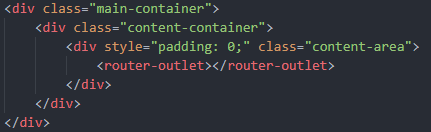

Angular Routing
Angular routing is a core part of the Angular platform. Angular routing can be installed from
the @angular/router package. There are many reasons why you would want to incorporate routing to you application:
- Enables responsive Single Page Applications (SPAs)
- Gives easy access to route parameters
- Easily interprets a browser URL as an instruction to change the view
Awesome, for these reasons I wanted to incorporate Angular routing into my Angular apps. Here is how I did it!
The Router Outlet
Ok, the router outlet is pretty cool. Basically it is where the router will place a component that matches the browswers URL.
You can even have multiple router outlets in
the application for more advanced routing techinques.
Here is how I used mine:

This block of code is located in my app.component.html.
I am using it here because this allows my to have a universal navbar (the one you see at the top of this page :) ) throughout my entire app.
So based on my URL, a view will be shown making it seem like another page is being loaded when in reality it is simply hiding one view and showing another!
Routes and Paths
The difined routes and paths are pretty important. They are basially what allow a URL to be mapped to a component.
Routes are actually objects that have a PATH property and a COMPONENT property. The PATH represents the URL to be mapped to a unique view(component), and
the COMPONENT is the Angular component that you want associated with that path.
Routes are defined in the app.routing.module.ts file. Here are my routes for this application:

Here there is an array or routes, and inside this array I have declared my route objects.
The first route I have is for my home page. The empty path is default for the main page. This URL is mapped to my MainPageComponent!
So whenever you hit this URL the MainPageComponent is shown. Likewise for my ng-routing-blog-post path which is mapped to this page!
Pretty cool if I do say so myself!